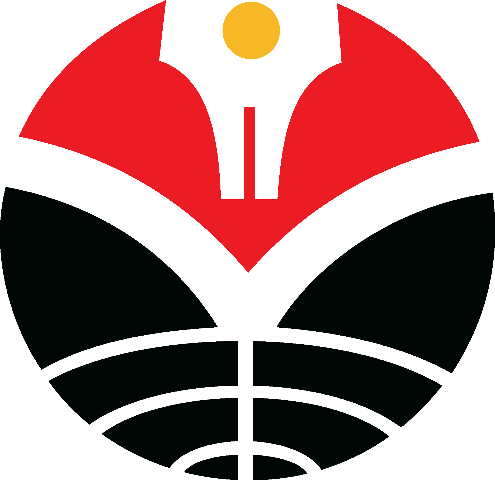

Profil singkat
Saya adalah seorang mahasiswa Pendidikan Sistem dan Teknologi Informasi di Universitas Pendidikan Indonesia yang berfokus pada pedagogi, informatika, dan technopreneur. saya berfokus pada minat saya dalam bidang teknologi informasi dalam mengembangkan website serta pengembangan aplikasi maupun game.
Skills
Untuk mengembangkan website dan aplikasi, saya memiliki kemampuan dalam:
Backend: HTML, CSS, Python
Database: MySQL, MariaDB
UI/UX: Figma
Riwayat Pendidikan
Pernah dan sedang belajar di instansi pendidikan berikut

